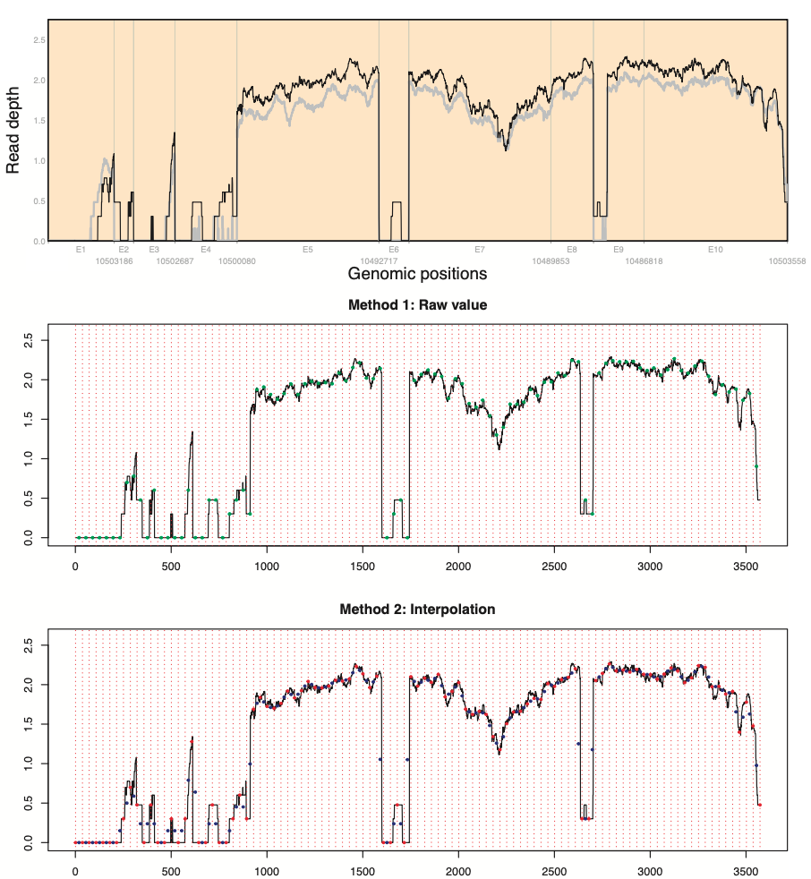
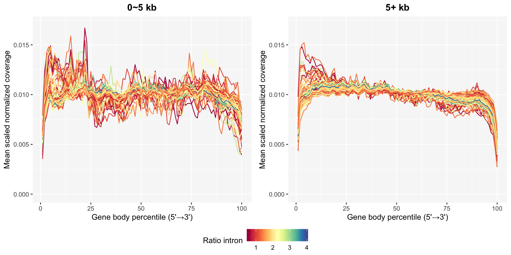

4 Data Processing
The union transcript is used to extract only exon pileup. To keep only exon location, we first build coverage pileup from raw pileup (part_intron) to pileupData (only_exon).
Gene length normalization is required because gene length is a major confounder in coverage shape, raw signal intensity, and degradation sensitivity. Without length normalization, comparisons across genes or across samples become misleading.
In our package, gene length normalization has two options to select read depth at the region: raw value and interpolation. After evenly dividing genomic positions by the number of regions (red vertical broken lines), suppose that both sides and center of regions are x-values of odd and even points, respectively. While the first method finds read depth at even points (green points), and the second one finds geometric mean (blue points) using read depth at odd points (red points). We recommend using the gene length normalization methods for gene length is at least 2\(\times\)the number of regions+1 to secure minimum read depth selection across genes.

Before the coverage normalization, identification and filter low-expression genes need by the filter_lowExpGenes() function to reduce sampling noise.
Only 961 out of 1,000 genes are used for gene body coverage when considering genes for which fewer than 50% of samples have TPM < 5.
Genes are separated into two groups to compare base coverage patterns in short and long genes. 0~5 kb and 5+ kb cover 96 and 865 genes, respectively.
pileupPath <- paste0("../pileup/", genelist, "_pileup_part_intron.RData")
# Filtered genes
genelist2 <- filter_lowExpGenes(genelist, TPM, thr=5, pct=50)
pileupPath2 <- paste0("../pileup/", genelist2, "_pileup_part_intron.RData")
geneInfo2 <- geneInfo[match(genelist2, geneInfo$geneSymbol), ] %>%
mutate(
merged_kb = merged/1000,
Len = factor(case_when(
merged_kb>=0 & merged_kb<5 ~ "0~5 kb",
merged_kb>=5 ~ "5+ kb",
is.na(merged_kb) ~ NA)
),
LenSorted = forcats::fct_relevel(Len, "0~5 kb", "5+ kb")
)
table(geneInfo2$LenSorted)##
## 0~5 kb 5+ kb
## 96 865genelist2Len0 <- geneInfo2[geneInfo2$LenSorted=="0~5 kb", c("geneSymbol")]
pileupPath2Len0 <- paste0("../pileup/", genelist2Len0, "_pileup_part_intron.RData")
genelist2Len5 <- geneInfo2[geneInfo2$LenSorted=="5+ kb", c("geneSymbol")]
pileupPath2Len5 <- paste0("../pileup/", genelist2Len5, "_pileup_part_intron.RData")In the plot_GBC() function, evenly spaced regions are defined as gene body percentile where the number of regions is 100.
Unstable patterns in base coverage especially in short genes are still detected even after filtering low-expression genes.
GBC0 = plot_GBC(
pileupPath = pileupPath2Len0,
geneNames = genelist2Len0,
sampleInfo = sampleInfo
)
GBC5 = plot_GBC(
pileupPath = pileupPath2Len5,
geneNames = genelist2Len5,
sampleInfo = sampleInfo
)
p0 <- GBC0$plot +
coord_cartesian(ylim=c(0, 0.017)) +
ggtitle("0~5 kb")
p5 <- GBC5$plot +
coord_cartesian(ylim=c(0, 0.017)) +
ggtitle("5+ kb")
ggpubr::ggarrange(p0, p5, common.legend=TRUE, legend="bottom", nrow=1)